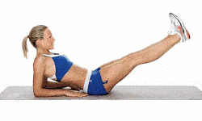
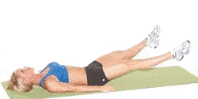
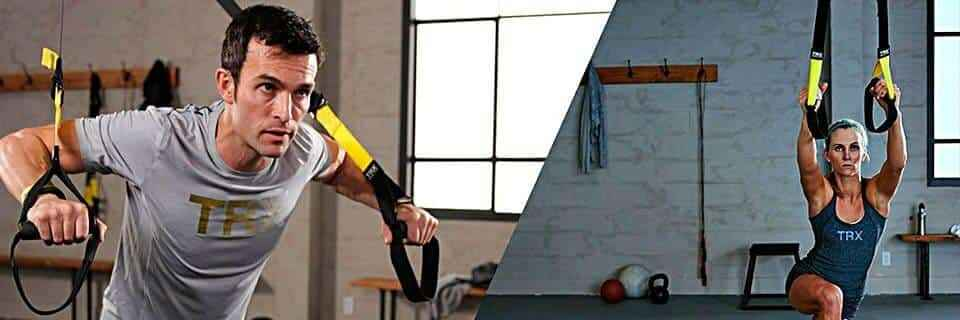
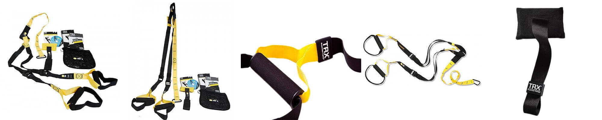
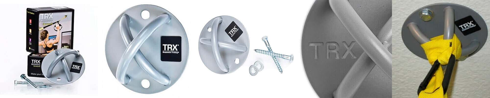

Японский профессор Идзуми Табата в соавторстве с научной группой из Национального института фитнеса и спорта Ritsumeikan в Токио ещё в 1996 году провёл исследование, в ходе которого доказал, что всего 4 минуты тренировки по протоколу Табата гораздо эфективнее, чем обычная часовая тренировка на выносливость.
Основная цель научной работы - определить виды и периоды физических нагрузок, при которых в кратчайшие сроки возможно максимально развить аэробную и анаэробной мощность, достичь долгосрочного сжигания всех видов резервных жиров без нанесения вреда здоровью.
Удивительно, но занимаясь по протоколу Табата у испытуемуемых спортсменов, документально зафикисировано увеличение анаэробной мощности на 28% и рост МПК (VO2max) на 14%. Сжигание жира после такого тренинга продолжается в течение суток с интенсивностью, превышающей обыкновенную аэробную тренировку в 9 раз!
Тренинг Табата
Развивает выносливость и физическую силу
Формирует мышцы
Сжигает подкожный жир
Омолаживает организм
Усиливает метаболизм
Принцип тренировки Табата
20 секунд интенсивной работы
10 секунд отдыха
8 раундов
За 4 минуты нужно выполнить 8 20-секундных периодов нагрузок, между которыми следует 10-секундный отдых. Упраженения нужно делать с максимальной скоростью и мощностью, чтобы поднять VO2 max до высоких уровней.
VO2 max– показатель вашей физической формы и уровня беговой подготовки. Показатель VO2 max характеризует вашу способность поглощать и усваивать кислород воздуха. В спортивной медицине именно этот показатель стал основополагающим для определения способностей спортсмена и перспектив его прогресса.
Занимайтесь где угодно
Система упражнений Табата не обязывает посещать спортивный зал или использовать тренажеры.
Для занятий отлично подойдут:
Квартира
Двор
Парк
Спортивная площадка
Табата для женщин
Не длительные, но крайне эффективные тренировки с жиросжигающим эффектом отменно подходят женщинам.
Оптимальные упражнения Табата для женщин:
Приседания
Пресс
Отжимания
Подтягивания
Бег
Велосипед
Кому не подходит
Людям, с заболеваниями сердечно-сосудистой системы
Пожилым людям
Перед началом тренировки тщательно разогревайтесь. Начинайте с простых движений и минимальных весов.
Табата Таймер
делай максимум за 20 секунд
делай серию на максимум за время
делай максимум в начале минуты
сделай максимум раундов за время
Ты на шаг ближе к своей цели!
Результаты тренировки
Раундов
0
Лучший
—
Худший
—
Затрачено времени
—
Быстрый выбор
AMRAP Workouts
×
Популярные интервалы от 01:00 до 09:50. Выбери шаблон, чтобы заполнить таймер без прокрутки.
Выбор тренировки
AMRAP Тренировки
×
Выбери готовую тренировку или создай свою
HIIT ТРЕНИРОВКИ
×
Выбери готовую тренировку или создай свою
EMOM ТРЕНИРОВКИ
×
Выбери готовую тренировку или создай свою
Информация о режиме
×
ТАБАТА для ЖЕНЩИН
ВДОХНОВЕНИЕ
Тренировка # 1
Тренировка # 2
Упражнения для женщин
Приседания
Поставьте ноги на ширину плеч, носки слегка разверните в стороны от себя. Оттягивая таз назад, и слегка наклоняя корпус вперед, сделайте присед до параллельности таза с полом. Колени не должны выходить за уровень носков, это очень важно.
Возвращаясь в исходное положение, не разгибайте до конца колени, мышцы ног на протяжении 20 секунд должны находиться в напряжении. Во время приседа руки можете вытягивать перед собой, что бы сохранить равновесие. Приседания можно усложнить выпрыгиванием в верх, с быстрым темпом будут получаться прыжки с глубоким приседом.
Отжимания от пола
При выполнении этого упражнения вопросов возникнуть не должно, но если на первых этапах выполнять классические отжимания, ещё и в быстром темпе тяжело, отжимайтесь с упором на колени.
И наоборот, если хотите усложнить, то отжимания можно делать с упором на возвышенность, например на диван или фитбол.
Комплекс упражнений на пресс
Классическое скручивание
Положение лежа на полу, ноги согнуты в коленях, руки за голову. Верхнюю часть туловища приподнимаем на 20-30 сантиметров от пола. Для большей нагрузки можно использовать мяч.
Подъем ног в положении лежа
Выполняется лежа на спине с прямыми вытянутыми ногами. Ноги медленно поднимаются вверх, становясь перпендикулярными поверхности пола.
Гармошка
Упражнение выполняется сидя, ноги выпрямлены вперед. Медленно приподнимаем их от пола на 20-30 см, фиксируем на несколько секунд, затем подтягивайте колени к груди.
Шаги на весу
Положение лежа, ноги вытянуты, руки за голову. Приподнимайте ноги на 45 градусов от пола и быстро делаем «шагательные» движения.
Подъем ног и таза из положения лежа
Лежа на полу, ноги согнуты в коленях. Силой мышц пресса приподнимаем таз и выпрямляйте ноги над головой.
Ножницы
Лёжа на боку, ноги вытянуты и подняты на 30 см от пола. Прямыми ногами выполняем маховые перекрещивающиеся движения.

ТАБАТА Для МУЖЧИН
МОТИВАЦИЯ
Тренировка по системе Табата — отличный выбор для тех, у кого катастрофически мало времени, а тело просит физической нагрузки.
Как правило, для табаты подбираются движения, которые задействуют одновременно несколько мышечных групп и суставов.
Тренировка # 1
Такие тренировки развивают общую выносливость организма, мышечный аппарат, ускоряют метаболизм, укрепляют сердечно-сосудистую систему.
О Бурпи стоит сказать отдельно
Бурпи - многосуставное упражнение, которое вовлекает в работу сразу несколько мышечных групп. Наиболее загруженными мышцами являются ноги (бицепс бедра, ягодичные и икры), также нагрузка ложится на грудные, трицепс и плечи. Практически нет таких мышц, которые бы не затрагивало бурпи.
Именно Бурпи в 1940 годах использовали военные Америки в качестве фитнес-тестов мужчин для службы в армии. Если новобранцу удавалось за 1 минуту выполнить около 40 бурпи (упрощенный вариант без прыжка вверх), то считалось, что он находится в отличной форме.
ТЕХНИКА ВЫПОЛНЕНИЯ БУРПИ
Разведите ноги на ширину бедер.
Присядьте достаточно низко, чтобы упереться руками в пол, не сгибаясь при этом в пояснице и не отрывая пятки от пола.
Перенесите ноги в упор лежа для отжимания (спина ровная), а потом снова вернитесь в позу приседа.
Встаньте и повторяйте.
Это одно повторение бурпи. Можно также добавить отжимание с полной амплитудой, когда вы переходите в упор лежа, и прыжок, когда поднимаетесь из глубокого приседа.
Прежде чем вы увлечетесь этим упражнением и будете выполнять его в быстром темпе, начинайте делать его медленно, контролируя каждое движение.
Тренировка c TRX по системе Tabata

Один из самых эффективных методов для проработки мышц всего тела
Упражнения с тренажёром TRX позволят по-новому взглянуть на возможности своего организма и изменят Ваш взгляд на привычные тренировки.
Сегодня петли TRX востребованы во всём мире. У тренажёра TRX огромное комьюнити. Люди, от мала до велика, объединились в сообщества функциональных тренировок с TRX.
Тренажёры TRX используются командами NHL, NFL, NBA и во многих других видах спорта, а также лежат в рюкзаке каждого четвертого бойца спецназа во время выполнения операций.
Многие звезды кино и шоу-бизнеса считают петли TRX незаменимым оборудованием для своих регулярных тренировок.
Тренируйся где угодно
Дома
На природе
В спортзале
В отеле
Используй вес своего тела
Закрепи TRX за любую дверь с помощью специального крепления.
Тренируйся на свежем воздухе
Закрепи TRX на ветке дерева или за любой столб.
TRX всегда готов к твоей тренировке
Закрепи TRX на турнике или крюке для боксерского мешка.
TRX с тобой во время командировки или отпуска
Помещается в ручную кладь. В номере отеля также используй дверное крепление TRX.
Открой новые возможности своего тела
В любом упражнении с TRX тренируются мышцы-стабилизаторы и задействовано все тело. Тренинг становятся по-настоящему функциональными.
TRX дарит свободу движений. Используй любые направления – без ограничений стандартных силовых тренировок.
Тренинг с TRX развивает все мышцы, объединяя в единое целое стабильность, подвижность, силу и гибкость – то, что нужно в повседневной жизни.
Базовые упражнения с TRX
Основа тренинга с TRX – упор на гармоничное и эффективное развитие мышц-стабилизаторов (кор, core).
Тренируясь с собственным весом Вы исключите осевую нагрузку на позвоночник. Петли TRX станут незаменимым тренажёром и для подростков. Сформируют и поддержат осанку, позволят стать силнее.
Прочный и легким карабин, надёжные ручки.
Тренажёр снабжен эквалайзером и фиксатором, чтобы удерживать стропы на одной длине.
Увеличенные лямки для ног позволяют тренироваться даже в больших ботинках.
Карабин выдерживает самые тяжелые нагрузки.
Немаркий цвет хаки.
TRX Tactical занимает мало места, упаковывается в специальный мешок, очень легко монтируется/демонтируется.
Способы оплаты
Оплата картой | Комиссия 0%.
Доставка по Москве - курьером 300₽. В регионы - СДЭК.
ООО "КРАФТ", ИНН 9731006452
Тренажер TRX Suspension Training

Занятия на тренажере TRX подходят для людей с любым уровнем физической подготовки и эффективно способствуют развитию силы, выносливости, гибкости и равновесия.
Тренажер TRX Suspension Professional Trainer состоит из нейлоновых ремней, создающих сопротивление с помощью двух источников: веса вашего тела и силы гравитации.
Правильная регулировка ремней (инструкции к применению в комплекте) позволит вам заниматься с нужным уровнем нагрузки (от 5 до 100% своего веса), которая корректируется разным коэффициентом стабилизации и позволяет получать любую желаемую интенсивность тренировки, подходящую как новичкам, так и людям в идеальной спортивной форме.
Способы оплаты
Оплата картой | Комиссия 0%.
Доставка по Москве - курьером 300₽. В регионы - СДЭК.
ООО "КРАФТ", ИНН 9731006452
Крепление TRX Хmount

Независимое универсальное крепление TRX – идеальное оборудование для тех, кто желает создать выделенное пространство для функциональных тренировок.